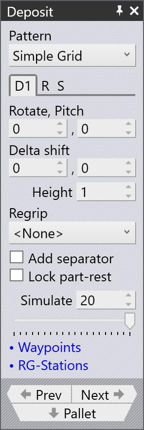

Deposit-panelen

Deposit-panelen hanterar de primära inställningarna för att placera en del på en pall, korg eller transportör. Välj den mest lämpliga mönstertypen för en given del. Till exempel är Drop to Basket-mönstret användbart endast om du använder den mekaniska grepparen med en liten del.
Deposit-panelen har följande flikar och andra alternativ:
-
Avsättningsposition (D1, D2,….,Dn)
-
Upprepningsrutnät (R)
-
Avsättningssekvens (S)
Bilden nedan visar hur avsättningsflikarna visas i bend navigator:

Deposit-flikar D1 och D2
Det finns flera avsättningsmönster tillgängliga (Simple, Alternating, Weave, Basket etc). Några av dessa mönster (Alternating, Weave) använder delar som avsätts i två olika orienteringar. Orienteringen och andra inställningar för dessa delar redigeras i D1 och eventuellt D2-flikarna.
Använd D1 och D2 för att hantera delens avsättningsinställningar för att släppa delar över avsättningspallen.
Rotate och Pitch
Alternativen Rotate och Pitch styr delens orientering vid släpppunkten. Rotate-inställningen (även känd som yaw) vrider delen runt handledens lokala vektor, medan Pitch-axeln roterar delen kring maskinens Z-axel.

Delta Shift
Alternativet Delta Shift används för att förskjuta varje successiv del i avsättningen relativt delen under. Du kan se en förskjutning på +15 mm i X-riktningen nedan, använd för att stapla delarna tätt mot varandra på ett stabilt sätt.

Height
Parametern Height styr höjden ovanför stapeln från vilken delen släpps (delen faller detta avstånd när den kommer till vila på stapeln).
Vi kommer att diskutera Deposit-panelen ytterligare från följande ämnen:
Simulate
Sekvensen eller ordningen i vilken varje del placeras på pallen kan ses genom att använda alternativet Simulate. Antalet lager och rutnätet som används för avsättningen bestämmer vilken kvantitet som simuleras. Delens avsättningssimulering kan visas genom att flytta simuleringsskjutreglaget fram och tillbaka.